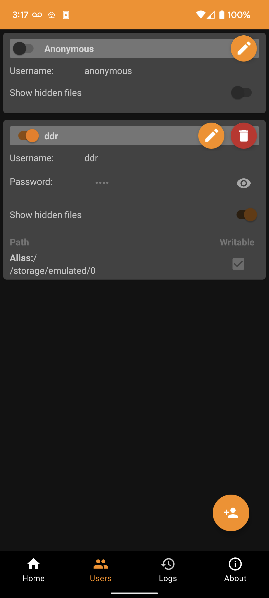
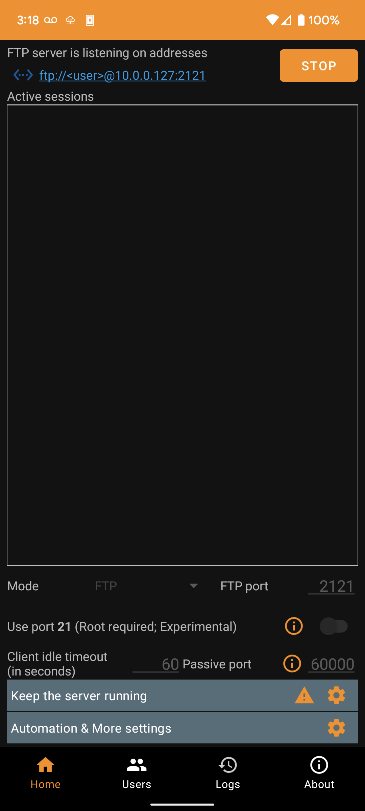
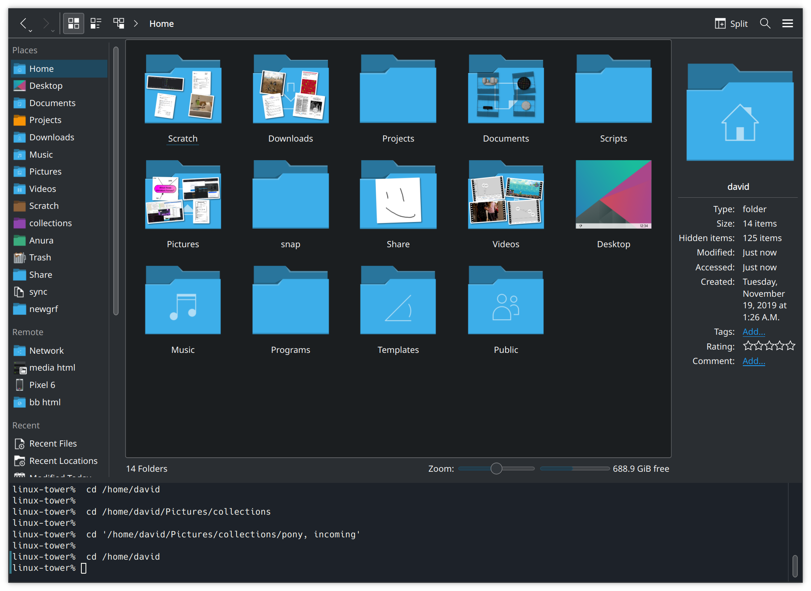
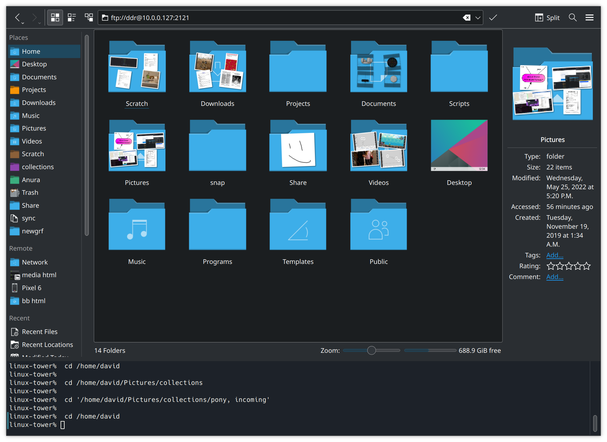
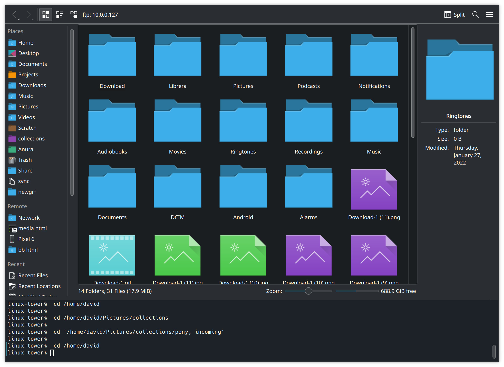
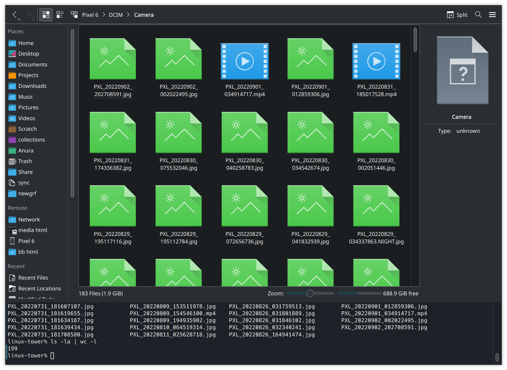

A Visual Emoji Tester
A few months ago I got massively sniped by https://spiffy.tech/is-this-an-emoji. I wrote up a different, more reliable approach (although more computationally intensive) to answer the question, "is this string one single colour emoji".
Presenting: The Visual Emoji Tester.

The approach the Visual Emoji Tester takes is to draw the text in question to a canvas, then see if there are any visible spaces in the resulting image. If there are, then we've got multiple characters. Similarly, if there's no colour in the resulting image, then it's not a colour emoji. The process is fairly future-proof, too - it will never go out of date as new emoji are released and incorporated into your font!
Salty Pepper
Let's briefly look at the $100 Zwilling Enfinigy Electric Pepper Mill. Stacking it up against the $7 electric pepper grinder I bought about 5 years ago by mistake, for which this was the replacement, I have some serious complaints. Zwilling ain't the brand they used to be, it would seem.
Why is it bad?
It can't grind while it charges, and if it discharges you can't run it manually. This requires you to own a back-up pepper grinder, because you usually don't need pepper in about 20 minutes or so. Even when the mill is charged, it mills pepper quite slowly. I like flavour, so I'm usually waiting around for a minute or so, or much longer if I'm cooking something. However, the kicker is that the mill is wildly breakable. Mine produced more e-waste than it ever did ground pepper, even including my one successful repair.
What broke?
After about a dozen grinds, less than one full charge of the battery, the button on the side got stuck in the "in" position. There was an audible snap, and the mill wouldn't turn on any more. I put it aside for a few months, after which I dug in and fixed it. It was quite fixable though! After some mild disassembly, a little plastic needed to be shaved off before the button wouldn't catch any more.
However, about 5 grinds later, the mill wouldn't turn on again and battery wouldn't charge. No measurable power draw when plugging the mill in, just complete failure. So, I had recycle what is effectively a new Zwilling pepper mill. Compare this to the $7 el-cheapo one which lasted 5 years, was repeatedly dropped, and never gave me any trouble at all until the plastic gear train wore out.
Negative Results
A few months ago, I decided to try my hand at writing a little bit of multithreaded Rust, running in Web Workers. While I have not been met with success, I feel it is important to mention what I've done so others can save some time and sanity – plus, I think the story is at least mildly interesting. All code is open-source and all examples should be fairly easy to run.
Besides, if nothing else, you can take great schadenfreude in my hobbies.
Backstory
It's currently June 2023. In November 2020, I decided, hey, you know what would be cool?
A multithreaded falling-sand game.
So, naturally, the tools I choose to do this with are HTML5 for the front-end. It's easy to package, I just have to throw a couple files up on my web server and there we go. Then, for the core, I'll write the simulation in Rust, and run it on all the cores of my CPU with a shared-memory model. I know we've got atomics in JS and WASM now, so let's try to use it to build something simple. Heh. Heh, I tell you.
1st Attempt - wasm-bindgen and Why FFI Is Not Your Friend For Speed
This approach attempted to use wasm-bindgen to read/write shared memory in the web-worker from WASM, generated from Rust, in a fairly naïeve manner. But why not just set the memory directly from WASM?
The Core Problem
Web assembly has one linear memory.¹ This is, by default, not shared. And if it is shared, all memory is shared - you can't just share a portion of it.
To share the memory, you also literally have to share the memory. Generally, you initialize your WASM in a web worker, the memory for the worker is allocated there. So, if we want to have shared memory, we must send it to the worker in a message and pass it in to whatever is compiling our WASM. This isn't, or at least wasn't in 2020, supported by wasm-bindgen as far as I could tell.² So, what do we do?
To get something working, I simply called back out to Javascript whenever I wanted to modify a value in the shared memory. The way this ended up working out was that, to read, say, the x-velocity of a falling particle of sand, I'd go something like Reflect::get_u32(Reflect::get(Reflect::get(world_obj, "velocity"), "x"), particle_index), which is a fairly direct translation of JS' world.particles.x[particle_index]. I don't think the idiom translates very well, especially including that this rust allocates two strings and a number as part of the FFI operation which then needs to get GC'd. I did try allocating the strings statically to speed things up, but it didn't speed things up that much. I could peg every core of my computer and hit, maybe, 5fps doing nothing. So this approach was, as suspected, hot garbage and FFI is slow when you're doing a few million operations a second.
—Attempt 1's readme.mdIn total, the render thread takes 128ms on Chrome and 59ms on Firefox to render out a 300x150 playfield. Aiming for a 120hz framerate, that gives us a budget of 8.3ms/frame, which is not particularly in the neighbourhood we need. Effectively all the time is spent creating and destroying our internal representation of a particle, which consists of world, thread_id, x, y, and maybe w/h if it references a real particle. The allocation and deallocation of one of these data structures takes about 30% of the processing time, and we usually end up creating a few of them as they're what we use to work with other particles as well. Another 20% of the time was spent reading data from the JS side of things, since we can't map the data we're working with in from the shared array buffer passed to the web-worker.
Rust interop with JS in this case has also proved rather awkward; while I'm sure it would work for other projects, for the sort of high-performance access we're looking at it's not suitable. Right now, WASM is more suited to the sort of workload where a little data is passed in to do a lot of work on, rather than a lot of data passed in to do a little work on.
One alternative might be to copy the raw memory in to the WASM process in the worker thread, thus avoiding the lookups. More sensibly, I think the best solution is just to avoid using WASM for this at all, and use Javascript or Typescript in the worker.
Oh, and the kicker? Back on the main thread, it seems you can't paint shared array buffers directly to canvas - you need to copy them into a new ImageData() first, because ImageData will only accept non-shared array buffers. So our zero-copy goal is kinda hosed at this point, if we're being pure about it. Let's ignore that and continue on. It's certainly not an ill omen of things to come... right?
2nd Attempt - Can't Read That Here
This was a fairly intense yet short-lived branch, because I ran up square against the core problem mentioned above. Diving in, this was when I figured out what was happening, and why I couldn't pass in a chunk of shared memory directly as I'd first assumed I could. Or, rather, I can pass it in, but I can't read it out.
The issue is that [multiple linear memories are] not a value which is represented in linear memory. That thing which Rust and C++ are based around. So it's kind of a new concept for them, and they just... don't support it, according to this GitHub issue from 2019.—Attempt 2's readme.md
So, now we know what we're up against, what do?
3rd Attempt - Can't Pass Array References
Yeah, that doesn't exist as a concept. You can't pass arrays from JS to WASM, because WASM only works on what is in linear memory. The array isn't in linear memory because we didn't copy it there, and we can only invoke functions and provide numbers as args to them.
A few months burned reading refactoring, moving on.
4th Attempt - Memory Synchronisation Issues
This brings us up to today, in mid-2023. I've managed to make my Rust generate - at least theoretically - with shared memory multithreading support, by adding atomics and mutable-globals to the feature list and linking with --shared-memory on Nightly. bulk-memory and --import-memory allow for the import of our shared memory object from JS. Coss'… this doesn't actually work. And I have no idea why! The documentation I've read says it darn well should, but it doesn't. My threads are sharing memory too well now - non-shared local variables appear to be getting allocated over top of each other in shared memory.
And this is where I give up. I can't figure this out. Save yourself some time and learn from my mistakes, and avoid using multithreaded Rust on the web. Even if someone hands you a fully-baked module, it's more trouble than it's worth - you'll wind up fiddling with it when something inevitably breaks, like browsers starting to require site-isolation headers. It's under-documented and very few people understand it. Certainly none than I can find asking around on various forums and Discords over the years this has been ongoing. You will not be able to get help when things go wrong, and things will go wrong.
On the upside, it wasn't a total loss - we filed a few browser bugs. But at the same time, that shows no one's been poking around this area much.
¹: There's loose plans to allow multiple memory objects to be provided to WASM, but that is not high priority because nothing expects to operate on more than one memory. We have based all our technology on things which can be pointed to with a numerical pointer, and web assembly memories are named, not numbered. So currently, we only have one memory, which is the default the number points into.
²: wasm-bindgen does have a proper mechanism to multithread things, but as far as I can tell it works by copying memory around which isn't what we want. If it does share memory, I can't figure out how.
Managing Files On A Phone
The Problem
Let's say you've accumulated about 20,000 files on your phone which you would like to move to a computer. The bulk of them are photos, but there's some stuff you've downloaded using multiple chat apps as well. In short; you've got yourself a non-homogenous mess.
There's a few options you have. You know you can send yourself stuff by email or a chat app, but those have a file size limit. You could work around that with dedicated service like Wormhole, but it still has limitations. Besides, just sending the files wouldn't help you organize your phone. And the on-phone apps are struggling with your photos folder.
How about cloud sync? If you've got Apple, in my experience, you're going pay some money, sync for a month, and find a perfect duplicate of your files labelled "failed to sync". There's also the worrying question of "is it syncing my full phone to my empty computer, or my empty computer to my full phone?" If you're on an Android, I do not think it is ideal from a privacy perspective either. Like with gravity, what goes up to The Cloud will come down from The Cloud at some point. A company gets hacked, goes bust, sells out. Or someone gets access to your account by scamming their support.
Besides, you probably don't have the world's best internet uplink anyway. Your telecommunication infrastructure was designed for cable TV, and your internet providers enjoy a sweet a monopoly and have no reason to offer a decent service.
My Solution
I ended up solving this problem for myself by installing an app on my phone, an FTP¹ server. Then I could use another program on my computer to manage the files on my phone via FTP; move them around, and copy them off. Here's how I did it in detail. The software used is not important, as it's nicely modular and you can substitute other software at any step.
On The Phone
I grabbed Banana Studio's FTP Server for the phone part of this. It seems a respectible one, though it's always hard to tell with these things. (If you use an iPhone, there are apps for that as well. e.g., this one I found on the first page of Google.)
In the FTP Server app, I've configured a user for myself like this:  Then, starting the server and connecting to the address given at the top: @10.0.0.127:2121. There are no active sessions. Some configuration and warnings appear at the bottom, but they are not relevant for this.">
{kind=link}
{kind=link}
{kind=link}
On The Computer
To connect to the address on the computer, we need an FTP client. Filezilla is a good one for Windows, Panic Inc.'s Transmit is a good one for Mac, but since I'm using KDE on Ubuntu, my default file manager Dolphin (the equivalent of Windows Explorer/File Explorer) just comes with one. 
{kind=link}
Plugging in the ftp:// URL we got from the FTP server app,

and entering our password, we are now browsing our phone and can move the files around as desired from our computer.

Since the files aren't leaving our immediate vicinity, this is also faster and more secure than a cloud-based solution can be. 🙂
{kind=link}
{kind=link}
As a fun bonus with KDE; through the magic of FUSE and having a terminal integrated with my file manager, I can also run basic Linux commands against my phone filesystem now. For example, to roughly count the number of pictures I took since I last cleared pictures off my phone: 
{kind=link}
Further Remarks
There is one other option I haven't touched upon - KDE Connect offers a nice file browsing feature among its many other useful features. (And it is cross-platform! Not just for Linux and Android.) However, there is currently one issue with it - KDE Connect can't let me manage my phone downloads folder "for security reasons". This puts it out of the running for this article, since managing my downloads is half of what I need it for. However, it has worked in the past, continues to work partially at the moment, and may work fully again in the future. So it gets an honourable mention, and it requires much less configuration than the FTP server option I've went with in this article.
For all that Linux has a reputation as hard to use, I find in some ways it's far easier to use than Windows or Mac. Today, because Dolphin supports SSH as well as FTP for browsing out of the box, it let me copy a screenshot from my phone directly to my web server using the standard graphical interface I'm used to. I've got both locations bookmarked, and having everything available under a standard point-and-click interface makes things so easy.
And if anything breaks? It's all discreet software components, you can switch them out for a different component if need be. Files on a disk are pretty much the universal language of data storage, and FTP is a pretty universally available transfer mechanism for them. 🙂
¹: When I say FTP, I'm including SFTP in it. Like with HTTP/HTTPS, the S stands for "Secure". I'm not too concerned about security for this setup, because I'm going over a local-area network. It should be reasonably free from snooping as it's all physically within about a meter of me here. If you're routing your FTP traffic over the internet, you should absolutely make sure you're using SFTP vs FTP. Any FTP software worth its salt will support both protocols. ⮌
A Variadic println() for Arduino
The Arduino ecosystem provides Serial.print(x); and Serial.println(x);, the latter adding a newline after the value. I almost universally want to print out out a tag so I know what's what though, so something like Serial.printlnMulti(x, y, z, ...) would be convenient. (x, y, and z and so on can be any type here.)
And indeed, we can make it so.
debug.hpp:
#pragma once
#include <Arduino.h>
template <class ...Types>
void debug(Types&& ...inputs)
{
(Serial.print(inputs), ...);
Serial.println();
}
Usage like debug("analog value: ", analogRead(35));. You can have any number of args to the function, of course.
What are the size implications of this, however? C++ is big on zero-cost abstractions, so ideally the above should copile the same as:
Serial.print("analog value: ");
Serial.println(analogRead(35));
Testing this in my non-trivial project, substituting one debug stanza of many, we get a total size for the fancy C++ 17 version, 279957 bytes. This compares favourably to the baseline of 279973 bytes, as we have paid a total of -20 bytes for our indescretions. A win for expressing what you want over expresning how to do it, I guess. ¯\_(ツ)_/¯
Fixing Linux Audio, Spring '22 edition
When upgrading from Ubuntu 21 to 22 this spring, I encountered two separate issues:
- KDE would not show any audio devices in the task bar, under the speaker icon, which appeared muted.
- After fixing that, my bluetooth headphones would connect but immediately disconnect, announcing pairing failed.
To fix the first issue, I had to enable Pipewire. It had been installed, but not turned on.
systemctl --user --now enable pipewire pipewire-pulse
It seems that Pipewire has now replaced ALSA, which was the previous sound system.
Interestingly enough, it seems Pipewire is now also responsible for Bluetooth! To fix my wireless headphones not connecting, I had to install Pipewire's bluetooth module. From Reddit:
sudo apt install libspa-0.2-bluetooth
systemctl --user restart pipewire.service pipewire-pulse.service
And now I can listen to my music again.
Hydrating Objects in Javascript
What is Hydration?
Hydration is a step which sometimes occurs after parsing your data. In some languages, such as Javascript, the parsing of the data from source text is usually done via JSON.parse(…) a DOM method, or a fetch reply's .toJson(). However, while this converts the text into your language's data structure, it doesn't convert them into your data structures.
For example, take a Rectangle class. If you parse a rectangle stored as x1y1x2y2 coordinates with JSON.parse(…), you don't get your Rectangle object with the nice .width and .height properties. Hydration is the process of constructing your Rectangle objects from the rectangle x1y1x2y2 data you parsed.
Hydration usually goes hand-in-hand with the validation of your data, because if you verify the data in one place and then construct the objects in another place, the two places will inevitably get out of sync at some point. (See Alexis King's "Parse, Don't Validate" post from 2019 for more details on the matter.) To that end…
Simple Hydration Method
I have written up a basic 8-line method to hydrate and validate your data from parsed JSON. It lazily evaluates and validates the results, so it will work well with large data sets. The hydrated data is used exactly like a normal (read-only) data structure.
const hydrate = (structure, data) =>
new Proxy(Object.create(null), {
get: (cache, prop) => {
if (prop in cache) return cache[prop]
if (prop in structure)
return cache[prop] = structure[prop](data[prop])
throw new Error(`unknown key ${prop}`);
}
})
Usage Example:
const data = hydrate(
{
a: Number,
b: String,
c: d => hydrate({
e: Number,
f: fetch.bind(window),
}, d),
},
{ //Or, say, await (await fetch('https://example.com/').body).toJson().
a: 1,
b: "two",
c: {
e: 3,
f: "https://example.com/",
}
}
);
console.log(data.a, data.b, data.c.f)
//1, "two", Promise{<pending>}
Here, I've hydrated some built-in object Javascript has, but you can use any object you have on hand of course. Note that because the hydration is lazy, we won't fire off an HTTP request until we actually ask for data.c.f from our data structure.
Because the hydrating data is used like a normal data structure, so we can pass the results from hydrate() to other functions and they will work without modification. We have injected lazy-loading data into our program!
How does it work?
This solution is based around the Proxy object, which comes with the Javascript standard library. (It is available in all browsers aside from Internet Explorer.) When we ask for a property of a proxy, eg data.a, we get to run code to determine what that property is. In the get function, on line 4, we check if we've already hydrated this object. If we have, we return the results of that so we don't end up repeating work and duplicating references. If we don't have the cached value, then on line 5 we check if we can construct a new one. This works by taking the constructor from the structure object, and the data from the data object, and calling the constructor with it. We store the results, which I've also seen called memoization, for the next time we're asked for this data. This avoids constructing the object again, which would be slow and cause problems - data.a might not equal data.a if we didn't store the reference, for example! Finally, if we don't have a constructor to call to validate the data and produce a hydrated object, we throw an error.
Limitations
This is demonstration code. It doesn't really handle lists, although that could be added in as another if statement. If you wanted to allow setting values in the hydrated data, you would have to add a setter. The syntax for hydrating a sub-object could be improved by having the function return itself partially bound if only one arg is passed in. But these are all very approachable, and I think show the beauty of Javascript - a clean, functional style enabling a traditional, organized object-oriented approach.
There are, of course, libraries which will transport your objects better than this code, such that you don't have to maintain a mapping in the client-side code. (The first arg in the example function call.) However, they will be by necessity more heavy-weight and harder to understand. I am, personally, a programmer who likes to stay close to the browser. If you understand your tools and work with their strengths, you can make some amazingly performant, understandable web pages.
No need to get complicated.
Fixing Linux Audio, Spring '21 edition
When upgrading from Ubuntu 20 to 21 this spring, my father and I both had the rear audio line out on our computers stop working. As we both had the same problem, I figured I would write it up in case anyone else was affected.
Symptoms
- The original audio device no longer shows up in the list of audio devices.
- The device is not turned off or muted, and cannot be turned on or unmuted, because it doesn't exist any more.
- Other devices (USB headphones, Bluetooth, etc.) still work.
- When no other audio device is attached, a dummy audio device is created.
- The troublesome audio device shows up when running some commands, I think such as
pacmd list-sinks.
Confirmation
- Running
sudo lsof /dev/snd/*in a console shows Timidity holding open some files. - Ending the
timidityprocess makes the audio device show up again.
Fix
- Uninstall Timidity using your software manager, or by running
sudo apt remove timidity.
Somewhat surprisingly, this does not seem to affect my ability to play back Midi files. I assume my music program is using Fluidsynth, which is a separate system? Nonetheless, a strange bug caused by a misconfiguration somewhere.
Shared Array Buffers With WASM
Yesterday, I solved a long-standing question I'd had - how do you get data out of a WebAssembly program without having to copy it back? Ideally, in such a way that a web worker wouldn't have to copy it back to the main thread either. I've been able to find some information on this around the web, but much of it seems to be rather outdated or does not address the issue. I decided to have a crack at it myself and figure out the state of the art by writing a small proof-of-concept.
Version 1
My first approach was to try to create the web worker using a SharedArrayBuffer backing its code. As a bonus, we should be able to redefine bytecode on the fly then which will be fun.
Copying from Depth-First's excellent guide (read it before this post), we arrive at something like this:
(async () => {
const memory = new WebAssembly.Memory({ initial: 1 });
const log = (offset, length) => {
const bytes = new Uint8Array(memory.buffer, offset, length)
const string = new TextDecoder('utf8').decode(bytes);
console.log(string)
};
//Blob generated with compile with `wat2wasm hello.1.wat --enable-threads --out /dev/stdout | base64 --wrap 0`
const unsharedData = new TextEncoder().encode(atob(`
AGFzbQEAAAABCQJgAn9/AGAAAAIZAgNlbnYGbWVtb3J5AgABA2VudgNsb2cAAAMCAQEHCQE
FaGVsbG8AAQoKAQgAQQBBDRAACwsTAQBBAAsNSGVsbG8sIFdvcmxkIQ==
`))
const sharedData = new Uint8Array(new SharedArrayBuffer(unsharedData.length))
sharedData.set(unsharedData)
sharedData[sharedData.length - 1] = '?'.charCodeAt()
const { instance } = await WebAssembly.instantiate(sharedData, {
env: { log, memory }
});
instance.exports.hello()
sharedData[sharedData.length - 1] = '.'.charCodeAt()
instance.exports.hello()
})()
Here, we start by defining some WebAssembly memory to pass args around with. (The initial value is in number of 64-KiB pages to allocate.) We then define a function, log, which will take this memory and print the contents using console.log(…). We'll call this from our WASM code, which we've serialised in this case as a base64 string. (The source of which is hello.1.wat, compiled using wat2wasm from WABT.)
To get our shared memory, we create a new array backed by a SharedArrayBuffer. In JS, all the typed arrays have a backing buffer. Usually, by default, it's an ArrayBuffer. Amusingly enough, an ArrayBuffer can be shared between multiple typed arrays, even of different types. The SharedArrayBuffer is called so because it can be passed between web workers without copying as well, which a regular ArrayBuffer can't do. This is the behaviour we're after.
So, let's test it! First, we'll set the final byte of our WASM program to ?, from it's original value of !, to prove we're loading the right memory and can manipulate it. Then, we start the WebAssembly program and call the hello() function of the instance we created. This in turn calls our log(), which prints "Hello, world?".
(Note: WebAssembly.instantiate(…) will also let you pass in an ArrayBuffer/TypedArrayBuffer, in addition to the Uint8Array we have here… in Firefox and not in Chrome.)
Now we modify our memory again, this time changing the final byte to .. However, calling into hello again, we find we get the same output, "Hello, world?". We can't just poke the memory of a running WASM program, it would seem - probably for the best. So, what do we do now?
Version 2
We have one other memory-buffer-ish object we can tweak. Let's see if we can't get that initial const memory = … declaration to be a shared buffer, instead of an unshared buffer. Some brief searching later, and we find that WebAssembly.Memory can indeed take a shared flag. It's not very well supported, but let's rework our code to try to test it anyway. (I believe the shared flag is part of the WebAssembly Threads system, which seems to just be referring to using shared memory to communicate between workers VS message passing.)
(async () => {
const memory = new WebAssembly.Memory({ initial: 1, maximum: 1, shared:true });
let globalBytes = null
const log = (offset, length) => {
const bytes = new Uint8Array(memory.buffer, offset, length)
globalBytes = bytes
//Can't use TextDecoder because it doesn't handle shared array buffers as of 2021-04-20.
//const string = new TextDecoder('utf8').decode(bytes);
const string = bytes.reduce(
(accum,byte)=>accum+String.fromCharCode(byte), '')
console.log(string)
};
//Blob generated with compile with `wat2wasm hello.2.wat --enable-threads --out /dev/stdout | base64 --wrap 0`
const wasm = new TextEncoder().encode(atob(`
AGFzbQEAAAABCQJgAn9/AGAAAAIaAgNlbnYGbWVtb3J5AgMBAQNlbnYDbG9nAAADAgEBBwk
BBWhlbGxvAAEKCgEIAEEAQQ0QAAsLEwEAQQALDUhlbGxvLCBXb3JsZCE=
`))
const { instance } = await WebAssembly.instantiate(wasm, {
env: { log, memory }
});
instance.exports.hello()
globalBytes[0] = '\''.charCodeAt()
instance.exports.hello()
})()
With our new memory declaration returning a shared buffer… on most non-Apple desktop browsers… 😬 we can now test this method of memory manipulation. We immediately find three things:
- Our WASM program needs to have it's memory declaration updated too, yielding hello.2.wat and a new base64 blob.
TextDecoderdoesn't accept a SharedArrayBuffer, so we have to write our own little routine here. I guess this is because, as the bytes could change at any time, we could potentially output invalid utf-8 as our data shifted under us. We don't care for this single-threaded demo, but it would be an issue normally.- We must capture the newly-shared text buffer in the callback (as
globalBytes), so we won't bother manipulating it before we instantiate our WebAssembly program.
To test this, we call hello() again, which sets globalBytes to our "Hello, world!" message. We now set the first character to an apostrophe, and call in to our function again to test if we were able to set data visible to WASM. It prints "'ello, world!", thus demonstrating we are! Since we're working with a SharedArrayBuffer here, we can share this reference across threads to get fast, efficient data transfer.
Same Script, Multiple Tags
Today, I happened on a fun quirk of web-dev. What happens if you include the same script twice, say like this:
<!DOCTYPE html>
<html lang="en">
<head>
<script src="test.js" type="module"></script>
<script src="test.js" type="module"></script>
test.js only runs once, despite being included twice. It seems modules have a specific trait where they're only ever evaluated once, I believe specified in steps 4 and 5 of ECMAScript 6.0 section 15.2.1.16.5.
Nothing good ever comes of running scripts multiple times. I'm glad it's out.
P.S.: Fun fact: You can still document.write(…) in an ECMAScript module, which just feels… wrong. (At least the with statement is history there, as modules are always in strict mode.)
Graphics Card Exposure Test
Sometimes, your graphics card's details are exposed to the web. Yours are not right now, though, which is good. Try opening this page in different browsers – I found Chrome had much more information than Firefox, for example.
The Code
//Function to grab GPU data.
const getGPU = () => {
const ctx = document.createElement('canvas').getContext('webgl')
const ext = ctx.getExtension('WEBGL_debug_renderer_info')
return {
card: ctx.getParameter(ext.UNMASKED_RENDERER_WEBGL),
vendor: ctx.getParameter(ext.UNMASKED_VENDOR_WEBGL),
}
}
//Put the GPU data into the web page.
const gpu = getGPU()
document.getElementById('graphics-card-test-output')
.textContent = `Yours is ${gpu.vendor}'s ${gpu.card}.`
Moving Domains
On Feb 23, 2012, I added a test page to my personal website at http://ddr0.github.com, using Github Pages. Three years later, I purchased ddr0.ca and started redirecting the domain name to http://ddr0.github.io, which Github had migrated Pages to after some security issues arising from having them on a subdomain of the main site. A few years after that, I started hosting my website myself on a VPS at Cloud at Cost. I kept the Github Pages in case anything went wrong. Ultimately, it did - the VPS service slowly died of oversubscription a few months ago. (It was an excellent service for many years—and for less than a dollar a month!)
As my web server slowly fell out from under me, taking upwards of half a minute to run ls, I retreated to my living room where this site is hosted now. I had deployed a highly-accessible DnD-style dice roller, 🎲, but it required a Node-based service running on the back-end to perform the rolls.
While I'd known it for some time, this really drove home that ddr0.ca is no longer hostable entirely on Github Pages. I need to maintain a server running it, so there's no reason to keep ddr0.github.io around. The code for ddr0.ca will remain happily on Github itself, but starting today any requests to a web page on Github Pages will redirect to the equivalent page on ddr0.ca.
As I don't have a whole lot of control over how Github Pages serves my content, I've replaced the content of each HTML file with a meta redirect and deleted most of the other files. This means that, as far as I can manage, the URLs that have been linked around the web should still work. Cool URLs don't change.
Moving forward, I should get the releases for my old projects (River Run, Cube Trains, and the Open Pixel Platformer demo) out of this repo. Github has the concept of releases now, and I would like to use that instead of the repo for my website. The files will still be hosted on this website as insurance against something going missing, of course, since you only own something if it's on your computer. And, of course, I'd like to update this blog a little more. I need a reason to implement pagination!
Web Security: Should CSP be set for my HTML files only, or my HTML files and all my assets?
Yes. "Some web framework automatically generate html on error pages and we found xss issues in those in the past, so setting CSP on everything is best." --ulfr from Moznet
Balancing Braces
I chanced to read an article this morning on Ben Aston's blog, which dealt with balancing braces. You should go read it now, since it's good and since I'm about to critique the heck out of his approach.
The task Ben sets himself is simple: write a Javascript function, isBalanced, that returns true if a set of braces is balanced. Running his solution through jshint, we find it has 13 statements with a cyclomatic complexity score of 6. I think it is an inelegant solution for an elegant problem, as my solution came in at 4 statements with a complexity score of 2. (And mine doesn't repeat the characters to be matched either.  )
)
Analysis
This can be looked at not as a parsing problem, but as a pattern-matching problem instead. You have to think about it recursively.
The key insight we will use is that this problem is as easy as repeatedly removing pairs of braces, such as () or []. There is no case where the braces could be balanced without a pair of braces occurring in the string. By repeatedly removing all the paired braces, we will end up with either an empty string or the non-matching braces.
Let's work this through. '[{}]' has one pair of braces we can spot - {}. Remove it and we are left with '[]' and another pair, [], which we can also remove. Are there any characters left? No? Then the input was balanced. However, '[{]}' has no pairs of braces, and does have characters left, so it's unbalanced. '()[' reduces to '[', which is likewise unbalanced.
Solution
function isBalanced(braces) {
do {
var matches = braces.split(/\(\)|{}|\[]/);
braces = matches.join('');
} while (matches.length > 1);
return !braces;
}
Given this solution, Ben's statement that "to solve this problem we need to have a function that will return the opener corresponding to a closer" is proven false. We have no such function, and we have solved the problem.
Comparison
In our code, there's a lot of things we don't have to worry about. We don't have to worry about inverting characters. We don't have to worry about queues. We don't have to worry about what the schema is, or even what a schema is. We just remove characters from a string.
This post is a lot shorter than Ben's, because my solution is a lot simpler. Often you do not have to think of the right data structure, but instead spend some time thinking of the right algorithm. My solution is simpler, but perhaps Ben's is constrained by an outside influence, not stated in the problem - say, the user of the function will want an error message pointing to the mismatched brace. While we should always strive for the clearest code, it's worth remembering that sometimes it was done that way for a reason.
Fixing Wacom Tablets for Hearthstone in Windows
As of 2016-10-29, there is some sort of bug with Hearthstone where it will ignore clicks coming from a tablet. A quick search turns up complaints, but no solution:
- Wacom tablet pen support has been removed with patch 3.1.010357
- can't use mouse pen after update
- Wacom Tablet not working on Hearthstone
AutoHotKey for Windows has no such issues. And it can send mouse inputs that hearthstone can read…  So, we'll make a new AutoHotKey script that clicks the left mouse button when the left mouse button is clicked. After installing AHK, make a new file with Notepad called wacom_echoer.ahk with the following contents:
So, we'll make a new AutoHotKey script that clicks the left mouse button when the left mouse button is clicked. After installing AHK, make a new file with Notepad called wacom_echoer.ahk with the following contents:
;Map the left mouse button to the left mouse button. This makes Hearthstone, among other
;games, "see" it.
#NoEnv ; Recommended for performance and compatibility with future AutoHotkey releases.
SendMode Input ; Recommended for new scripts due to its superior speed and reliability.
SetWorkingDir %A_ScriptDir% ; Ensures a consistent starting directory.
return
LButton::LButton
Double-click to run. Hearthstone should now work as expected.
I also followed these instructions to disable the click rings in Windows.
A Case Against Text Templating
I recently had to deal with a mature PHP-based application. While quite well maintained, the code was suffering heavily from the effects of greedy serialization. Most templating languages, PHP included, work by going along and imperatively creating a long string of text. Echo this, buffer that, and concatenate the whole shebang into an outgoing HTML file. This is a powerful approach, beautiful in the simplicity of its method, and infinitely embeddable.
It is also a a trap.
Say you are creating a function to make a "breadcrumb trail" style nav bar. It's used on every page of your app, and it's pretty standard. You have a few ordered fields such as company, contact, and job; and a few custom ones which will be passed in as an argument. The function signature looks like getBreadcrumb(context[, extraListItems]).
Some time later, you find you need to give a custom ID to one of the standard breadcrumb links. So, you go back to the getBreadcrumb() function and add in another parameter, a list of IDs corresponding to the produced list of elements. Now the function looks like getBreadcrumb(context[, extraListItems[, listItemIDs]]).
After the ID mechanism is firmly entrenched in your codebase, you are asked to add a class to the second breadcrumb item. Because you're a good programmer, and can see where this is headed, you make the mechanism generic. You can now pass in a list of maps such as {id: 'foo', class: 'bar baz'}. Now, the signature looks like getBreadcrumb(context[, extraListItems[, listItemIDs[, listItemAttributes]]]).
A few months later, a bug report comes in. On one page in, say, the Financials module, the breadcrumb is showing up as being in the Reports module and people can't navigate back to their financials. When you look at it, you find it's a simple problem - it's a financial report. The fix adds in another parameter to the getBreadcrumbList function called 'hideAutomaticBreadcrumbs'.
Now we have a beast of a function with five arguments, one of which is redundant. (Many calls look like getBreadcrumb(this->context, null, null, [[], [], ['id'=>'currentJobName']]).) It's not even so much a big function as it is an awkward one. It's hard to test as well. What's more, the pattern has repeated itself across most of the code. Some of the functions even have more than a dozen arguments! How do we avoid this? At every step, adding one more arg seemed like the right thing to do.
The problem with the input of the function was actually caused by the output of the function. getBreadcrumb() returns strings of HTML, which are written to the document we're generating. However, this means that getBreadcrumb() is the final place we can manipulate and change the breadcrumbs. To fix this, let's try re-running our scenario. However this time, instead of returning HTML to be echo'd to the document, we will generate a tree structure to represent our HTML. Unlike the text representation, the tree will have all the relevant attributes open to manipulation later in the program. So, we might access the breadcrumb trail via html.body.topNav.breadcrumb. The second breadcrumb item might be accessed via something like breadcrumb.li[1], where breadcrumb is an ordered list.
Now that the structure is available to us, the custom breadcrumb id argument is thrown away – never existed – because we can simply go breadcrumb[1].li.id = "customID". We don't have to generate the list with customID, because we can change it after we've generated it. Same thing with the attributes list we added when we needed classes.
The bug report about one of the list items being incorrect is similarly solved by modifying the offending item in place, as a one-off change.
Now the getBreadcrumb(context[, extraListItems]) call is manageable. Special cases are handled locally, and the arguments list is not polluted with redundant behaviour. By discarding the structural information of our HTML document only after we're done creating all of it, we are free to manipulate it as we need to. Because we don't have to write a function to generate the perfect breadcrumb trail every time, we are able to write a simple one that just generates a good default breadcrumb trail.
Calculating a Bounce
Problem: Given a ball and a curved wall, how do we calculate the angle of the bounce of the ball? Assuming we have the normal of the wall at the bounce location, our problem becomes:
Problem: Given two vectors, x₁ and n, how do we mirror vector x₁ around vector n to get x′? (x₁ is the ball velocity and n is the normal of the wall.)
Solution: Implement https://mathworld.wolfram.com/Reflection.html (The first picture is accurate to the situation.)
As written: x₁′ = -x₁ + 2x₀ + 2n̂[(x₁-x₀)·n̂]
Given that x₀ is always [0,0], it can be ignored.
x₁′ = -x₁ + 2n̂[x₁·n̂]
Given that n is pre-normalized, we can un-hat the ns.
x₁′ = -x₁ + 2n[x₁·n]
To calculate the dot product: (from https://www.mathsisfun.com/algebra/vectors-dot-product.html)
x₁′ = -x₁ + 2n[x₁[0]*n[0]+x₁[1]*n[1]]
Normalize the notation, since we're now using [0] to get the vector components.
x₁′ = -x₁ + 2*n*(x₁[0]*n[0]+x₁[1]*n[1])
Now, to calculate both parts of the vector separately:
x₁[0]′ = -x₁[0] + 2*n[0]*(x₁[0]*n[0]+x₁[1]*n[1])
x₁[1]′ = -x₁[1] + 2*n[1]*(x₁[0]*n[0]+x₁[1]*n[1])
Now you can replace the x₁ and n with the variables of your program, and be on your way. For example, in Javascript:
//Returns vector v mirrored around the normalized vector mir.
function vReflectIn(v,mir) {
return [
-v[0] + 2*mir[0]*(v[0]*mir[0]+v[1]*mir[1]),
-v[1] + 2*mir[1]*(v[0]*mir[0]+v[1]*mir[1]),
];
}
Batch Converting Gif Animations to Spritesheets with ImageMagick
During some recent work on the Open Pixel Platformer, I had many .gif animations which I needed to make into spritesheets. To convert them all, I wrote a Bash script to automate the task.
gifs=`find . -iname '*.gif'`
echo "Queuing $(echo "$gifs" | wc -l) gif animations to be converted to png spritesheets. Queued images may take a while to process in the background."
echo "$gifs" | while read gif; do
png=${gif/.gif/.png} #convert *.gif filename to *.png filename.
#echo queued "$gif"
# Explanation of montage command:
# "$gif" \
# -tile x1 -geometry +0+0 \ #Set up the tiles.
# -border 1 -bordercolor \#F9303D -compose src -define 'compose:outside-overlay=false' \ #Draw a 1-px red border around the image, so it's easier to find frames. -compose is needed to make the border not fill in the transparent pixels in the image, and -define is needed to make the -compose not erease the previous gif frames we're compositing as we draw each subsequent one.
# -background "rgba(0, 0, 0, 0.0)" \ #Set the background to stay transparent, as opposed to white. (-alpha On seems to have no effect)
# -quality 100 \ #The default quality is 92, but since we're dealing with pixel art we want the fidelity.
# "$png" & #Run all the conversions in parallel, let the OS figure out scheduling. Replace with something smarter if things start lagging too much.
montage \
"$gif" \
-tile x1 -geometry +0+0 \
-border 1 -bordercolor \#F9303D -compose src -define 'compose:outside-overlay=false' \
-background "rgba(0, 0, 0, 0.0)" \
-quality 100 \
"$png" &
done
The script loops over any gifs found, and runs ImageMagick's montage on them to convert them to a png spritesheet. The output takes into account transparency of the original image and draws a border around each frame so you can easily find the right dimensions. To use the script, run it in the root folder containing everything you want to convert. The script should work in Bash on Mac or Linux if Imagemagick is installed, but it will not work on Windows.
Practical CreateJS Examples
Note: Some examples were previously discussed in the October 2013 issue of the Software Developer's Journal. Some updates were made as of August 2014.
I have found it difficult to find nice, simple examples of how to lay out an EaselJS program. The documentation and examples generally do a good job of covering the nuts and bolts of the library, but I find that some additional assembly instructions would be helpful. So, in rough order of my progression through the library, here are 5 examples:
Example 1: A Basic Scene
We'll start with a small platformer mockup, very basic. In it, we want to have some clouds float behind the player. We'll create a new HTML file, import our library, and write a simple scene. (You can grab the library I used from https://code.createjs.com/createjs-2013.05.14.min.js. Other versions are available on the CDN page.)
As a first attempt, we add the ground, a cloud, and an actor. Since we're planning to add more clouds later, we've made that code a function. And – what do you know, it works! Our little cloud wafts gently across the sky, behind our actor.
(Aside: To view the code for the example, I recommend moving the tab the 'code' button opens to a new window… the popup code can be a bit flaky. When you mouse over the highlights here, they'll highlight there as well. A more reliable way to view the code might be to play the example, and then select 'view frame source' from the right-click menu. The code is also available on Github.)
Here, we've added a function to add clouds to our scene every two seconds. While the first cloud works just fine, the other clouds float over our player because they're added after the player is. An index-based solution, like "add this after the first 5 objects", will be a rolling disaster. The best way I've found so far to deal with this problem, generally, is to have named z-orders. Even giving z-orders by an arbitrary number grows difficult to manage after a while.
Z-orders are also known as layers, and fill the same role as a 3D game's depth buffer.
Luckily, CreateJS implements the best of the three systems. They just don't tell you about it. Instead, the documentation merely suggests that containers are a good way of grouping together objects that you would like to transform in the same manner. They are also a great way of grouping together objects you'd like to keep beneath other objects. At the start of the program, you can define all the z-orders that will exist as containers, and give them descriptive names. Now, as the program progresses, we can add objects into the right layer.
Here, we've added some containers to the stage, and passed those containers into the various functions that add our objects. Now, although our functions are unchanged from the previous example, we have our clouds correctly added to the middle layer.
Example 2: Caching & Performance
In many games, we use a board or background that we don't want to have move every frame. For example, we might have a scorecard that we put some text objects on, or a game where you have a few animated actors on a still background. We'll look at a dummy minesweeper game with two blue bars that track the mouse.
To build an example that stresses our computer a little, we'll make a simple game of minesweeper with each tile as an image object. Our play-field is 40² tiles, so we'll have 1600 objects to play around with. We'll lay some blue bars on top to provide interactivity for the demo.
If we play the example and open up our task manager, or shift-esc on Chrome, we can see that the game is taking up more CPU than it should be. (It uses about 90% here, and lags like crazy.) CreateJS is geared towards creating fully dynamic scenes, so unless we explicitly tell it that it can cache an object, it will render that object to canvas each frame. As a result, our simple game has to draw 1600 objects 50 times a second.
To fix this, we'll cache the background layer that is holding the tiles. Now, when we go to draw a frame to screen, we'll just draw three objects – the background, and the two blue bars on top of it. However, we will need to refresh our cache when it goes stale. The cash starts empty, so we'll add a refresh call when we've loaded the tile image we need to update it on line 31. The only time the player will invalidate the cash is when they click on a tile, so we'll add in a similar call to refresh the cache when the tile's "clicked" image is ready to be drawn. (If we had used PreloadJS, we wouldn't have to wait to update the cache here.)
Now, making sure we stop the first example before measuring the CPU usage of the second, we find that our game only uses a little bit of our available CPU. My edition of Chrome reports about 15% usage, and I don't experience the lag that the first version had.
Many older games drew the mouse cursor on screen in the manner we draw the blue bars here. This was because the common operating systems at the time could only render a simple black-and-white image as a custom cursor. This introduced around one to three frames of delay between moving the mouse and seeing the results, depending on how many steps the rendering pipeline was. This was barely noticeable when the game ran fast, but when you dipped down into 20 or 30 fps moving the mouse became a bit of a speculative operation. Today, most everything (including Javascript, via CSS) supports full-colour custom cursors.
Update: Sebastian DeRossi, from the CreateJS team, has sent me a reworked version previous minesweeper example!
To be honest, it has been about half a year since I wrote this and he replied and I got around to trying to figure out what was happening. I don't really know what to make of this, code-wise…
 It's a remarkably different way to do things, and probably quite a bit more robust!
It's a remarkably different way to do things, and probably quite a bit more robust!
Example 3: Resizing
A proper web-based game ought to be able to resize gracefully with the browser, especially on mobile where a game might be flipped around as the device rotates.
Here, we'll draw a rotating circle. We'll be able to see the redraw area, and any extra logic frames that are caused by our changes. If we drag the corner, we can see a bit of lag and flickering as the resizing logic clears the canvas before a repaint occurs. There is a bit of messiness surrounding the resizing, because there is no event fired when a DOM element changes size.
To get rid of the resizing flicker, we just have to re-render the stage when the element is resized. This is easily accomplished by a single call to the stage's update method on line 64.
Example 4: Working with the DOM
When making an HTML5 game, it is a good idea to actually use traditional HTML5 to lay out the interface for your game. Layout is, after all, what HTML5 was born for.
In this example, we'll use the titular character from Frogatto & Friends, and display a small interactive message.
When our character is clicked on, we register an event handler for the mouse move event so we can drag Frogatto around. When that triggers, we draw him and then recalculate the position of the speech bubble. (If we don't do both these at once, it will look strange as the speech bubble will move across the screen at a higher framerate than Frogatto will.) To extract the positioning information for the HTML speech bubble, we'll use the player's localToGlobal function and specify an offset for the speech bubble to be at.
Example 5: Reading from Canvas
While CreateJS is nice, sometimes you want to "drop down to the wire"… so to speak… and work with the raw canvas itself. CreateJS imposes some restrictions on how we can do this – we can't just interject arbitrary commands into our drawing chain. We can, however, read from or write to a cached canvas. In the following example, we'll write a minimalistic game to use as the seed data, and then write a droplet pixel effect in Javascript.
To put together our scene, we'll define a forest background via CSS because it is very simple to do it that way. We also position the game canvas on top of everything else, because we want to be able to put some lighting effects over our droplet output.
After we set up our stage, the next segment of our program defines the CreateJS spritesheet that we'll use as our player. We then create a new player object itself from the spritesheet.
On line 74, we have a function that describes, in the form f(x), the lowest point y we can be at. When we move Frogatto, we use this to make sure he's never lower than the ground. The key down and key up event listeners set velocity and orientation of the player.
Now that we have our minimalistic platformer up and running, we'll add a pixel effect to the black bit underneath our feet. This is covered by the second canvas, and won't use CreateJS.
Here, we've added a section of Javascript to the end of our file. Every five frames it copies the last line of our CreateJS-controlled canvas to the first line of the background canvas. We can read from any cached object in CreateJS this way. The stage itself is always cached to canvas, since that is what is displayed on screen.
This appears to work as it should. The next bit… not so much. While it still runs and demonstrates the point of the tutorial, it does not do so correctly, and I can't figure out why. When I run the program, I see some blooms of colour coming in from the bottom of the image – but there should be nothing of interest seeded there. (It's also rather slow, so no street cred for me in that department either.)
Due to the highly repetitive, cpu-bound nature of the shader effect, I've pulled out many variables for caching and ease of manipulation. Of particular note is the dataSize variable, which ensures we don't have to look up an expensively-derived length property in an important loop.
There are a few options when it comes to looping over an array in Javascript. In order of speed, from slowest to fastest: array.map → array.forEach → reversed for-loop → for-loop. However, I advise using map and forEach when possible, because there are less moving parts to mess up compared to a for-loop.
The way our pixel effect works is fairly simple, in theory. In the typed array that contains our image data, we have each channel of each pixel of each line of our image, all one after the other. Our code here looks forward/back one row, then one pixel, and then both. It takes the maximum value it finds. It then subtracts 2 from that value, to make our effect disappear after a while. The result is written to a new array so it doesn't interfere with calculating the next pixel. This doesn't wrap around to 255 after 0, because we are writing to a Uint8ClampedArray. Since Javascript lets us read from outside the defined array, our code will simply fail for the first and last lines, returning NaN to the Uint8ClampedArray. This is converted to 0, so the first and last rows of our image will be black.
Afterword
I hope this provides some examples of good architecture in CreateJS. In some cases, I've chosen simplicity over correctness. I feel this is an acceptable trade-off, because it is much easier to correct something in-place than it is to rearchitect it. Good luck with your project!
Diagrams and Charts of Game Mechanics
Computer games are, in broad terms, systems of exchange. The player can exchange gold coins for a fancy sword; time and attention for progress; or the player can sit back and watch the game exchange stuff with itself. By graphing interactions between the player and bits of the game, we can see what the focus of the play of the game will be. Lets start off by looking at the simplest example there is, Progress Quest.

The player is not noted on this graph, as the player is only involved during the setup of the game. Like big O notation, our graphs will disregard one-time costs.
OpenTTD
A rather more interesting example is Open Transport Tycoon Deluxe. As with many games, you are limited in your actions by your budget. You can actually earn enough money that it becomes a non-issue, however, at which point you are limited simply by the amount of time you can actually put in to building new routes. (Side note: This presents a curious inversion to Zynga games such as Farmville, which progress slower as you progress. OpenTTD accelerates the pace as the game goes on.) The chart below describes one facet of the game, the routes you have your vehicles haul goods over to make money.


A route can (basically) be graded on a handful of characteristics; straightness, decongestion, infrastructure, and potential. To examine straightness: First, it takes more effort to make a straight route. Other things have to moved out of the way. So more effort positively affects straightness. It costs money to (re)move things, so straightness negatively affects money. However, it positively affects decongestion, which (following the arrows) leads to vehicles having higher speed, which leads to progressing along the route faster, which leads to more money. So, straightness is an investment which will return long-term. Since the interaction graph is very circular like this, we can conclude that OpenTTD is a game of investments, with a strong focus on money.
Or, say we have a length of railway that is not congested yet. Our effort could be better spent somewhere else, even though the decongestion of the route would decrease. The route would have less future potential to generate revenue, since trains would progress slower along the route as they got in their way. We could spend that effort making the route longer, or making it straighter.
Alternatively, we might have to wait for some time to pass, and for existing investments to pay off.
Sim City
In Sim City 4, we would have a lot of arrows pointing to and from the transit system of our city. Take the power system: the power system basically goes currency → power plant → city growth → currency. The water system works exactly the same way, with no other significant effects. Transit systems, however, are in demand based on terrain, where stuff has been zoned, and what neighbours you have. Their ability to supply the demand is lowered when demand is high. They directly generate currency, in addition to consuming it. They're comprised of roads, rails, airports, subways, and so on. The partial failure of transit systems can lower or raise demand on all systems, sometimes spectacularly so – in addition to positively or negatively affecting city growth! In terms of city infrastructure, you will put down more transit tiles than other infrastructure combined.
Since there are no other systems which interact deeply as transit does, we can conclude the Sim City 4 revolves around transit. This is a bit of thematic clash with the presentation of the game, which is to build a city. By charting relationships before building a game, we can foresee such problems and know what steps to take to avoid them.
Every version of Sim City, and most other earlier Maxis games, adhere to a effort-time-currency pyramid. You can put effort in, if you don't have to wait for a period of time to get enough currency to fund your efforts. This is a very popular model for simulation-genre games, and is seen in such games as Open TTD, the Tropico series, and YooT Tower. (YooT Tower is a sequel to the more popular Sim Tower.)
A Dark Room
I found an interesting game a few days ago. It is very well designed, and can be played at Doublespeak Games' site. The game takes a fairly extreme approach the graph of interactions. It starts with one. You move up from there. (This is the polar opposite of Dwarf Fortress.) A Dark Room is ridiculously easy to learn, and it stays fresh throughout the game as the number of interactions expands.


And that – that is powerful stuff. Portal (the first version, at least) played the same game, to great effect, and enjoyed great success. Progress is a powerful thing!
The Start
This is the start of the blog. That's all there is, there is no more.